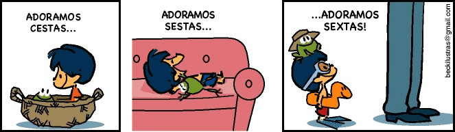
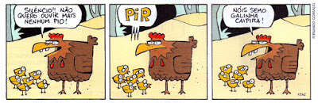

Como as funções da linguagem são cobradas no Enem?
É preciso conhecer e entender bem as características de cada função da linguagem, mas não para apontá-las de maneira mecânica. No Enem, o candidato deverá saber interpretar um texto, bem como o seu formato e os seus objetivos, para perceber qual a função de linguagem predominante nele.
O processo de interpretação é constante: ocorre tanto na leitura do texto de apoio de cada questão como na leitura da pergunta e das alternativas. É necessário entender se as afirmações feitas são coerentes com as características das funções da linguagem.
Quais são as funções da linguagem mais cobradas no Enem?
Dentre as seis funções da linguagem, algumas se destacam, tendo estado presentes seja nos textos de apoio, seja no próprio conteúdo da pergunta. Eventualmente, questões sobre apenas uma função aparecem, podendo até estar em apenas uma das alternativas, enquanto as outras exploram conteúdos diversos além deste.
Função referencial ou denotativa: centra-se no contexto da mensagem e caracteriza-se por ser uma comunicação objetiva e direta. É muito comum em textos informativos, acadêmicos e jornalísticos.
Função conativa ou apelativa: centra-se no receptor e busca estabelecer contato e identificação com ele, chamando-lhe a atenção para ser um enunciado atrativo, apelativo. É muito comum em textos publicitários.
Função poética: centra-se na mensagem, na sua forma e expressão estética. Apresenta linguagem conotativa (isto é, figurada), explorando a sonoridade ou a forma do discurso. É comum em obras artísticas, como em poesias, músicas, filmes, entre outras produções que trabalhem com a forma da expressão.
Função emotiva ou expressiva: centra-se no próprio emissor do discurso e, portanto, também pode utilizar linguagem conotativa. Caracteriza-se por certa subjetividade no discurso, muitas vezes explicitada pelo uso da 1ª pessoa. É comum em diários e em obras artísticas.
Além dessas, há outras duas funções que tendem a cair menos no exame, mas cujas características você precisa conhecer bem para evitar surpresas ou confusões durante a prova.
Função metalinguística: centra-se no código, isto é, no próprio sistema por meio do qual se estabelece a comunicação. Assim, é a linguagem voltada para a própria linguagem. Por exemplo, uma poesia sobre o próprio ato de criar uma poesia explora a função metalinguística, por focar no próprio código. Do mesmo modo, uma pintura ilustrando uma pintura também usa a função metalinguística.
Função fática: centra-se no contato ou canal por meio do qual se estabelece a comunicação, produzindo mensagens sempre tendo como objeto principal o próprio canal, testando-o para verificar sua eficiência. É muito comum, por exemplo, em ligações telefônicas ou em chamadas de vídeo, quando testamos se alguém está nos ouvindo e nos vendo.
O que são funções da linguagem?
Como o próprio nome sugere, as funções da linguagem analisam os objetivos estabelecidos na comunicação, ou seja, qual é a função exercida na comunicação. Essas funções variam de acordo com a maneira como se comunica. Cada função da linguagem foca em um determinado elemento da comunicação, de modo a explorar características particulares a partir desses elementos.
Semântica
A semântica é um ramo da linguística que se refere aos significados das sentenças. Esta área subdivide-se em em vários tipos, como semântica textual, formal, lexical, discursiva, cognitiva, etc. Todas possuem o mesmo objeto de estudo: o significado.
Sabemos então que as palavras possuem significados, dependendo do contexto de seus usos. A semântica, então, investiga o significado dessas palavras. Esses estudos ainda podem estar subdivididos em:
Semântica teórica: a semântica teórica se volta para o conceito de significado, estudando-o. Semântica histórica: já nesta vertente, seu estudo analisa os significados diacronicamente, ou seja, ela relaciona o significado a partir de determinados períodos históricos. Semântica descritiva: analisando o significado sincronicamente, ou seja, o estudo de significados referentes à atualidade. Semântica comparativa: neste estudo, o que se faz é relacionar os significados.
Analisemos as duas frases a seguir:
⚈Pedro comeu a manga verde.
⚈João consertou a manga da camiseta na máquina de costura.
Tanto em 1 como em 2 a palavra ‘manga’ possui a mesma grafia, porém, carrega significados distintos. Em 1, manga refere-se à fruta; já em 2, manga está referindo a um vestuário.
Para os falantes da língua portuguesa essa distinção irá ocorrer naturalmente, sem grandes problemas, pois possuem o conhecimento internalizado de sua língua natural. A semântica então, tem como finalidade estudar esse conhecimento.
Vamos agora debruçar-nos sobre alguns conceitos básicos da semântica:
Polissemia
A palavra polissemia é de origem grega e significa poli = muitos / sema= significados. Ou seja, ela se refere a multiplicidades de sentidos de um vocábulo, que por vezes, pode gerar ambiguidade.
Vejamos a tirinha abaixo:
Neste exemplo, percebemos que a palavra ‘porca’ gera uma ambiguidade, pois, possuindo o mesmo som e, provavelmente, não sabendo o garoto da existência de uma peça de metal usada para consertos, vai atrás do animal ‘porca’.
Outros casos de polissemia:
⚈Ela comprou uma cabeça de alho.
⚈Acertou em cheio a cabeça do prego.
⚈Hoje de manhã sentiu dores de cabeça.
Homonímia
A homonímia ocorre com palavras que possuem grafias e/ou sons idênticos, porém sentidos distintos.

Na tirinha acima, as palavras ‘cestas’, ‘sestas’ e ‘sextas’ possuem grafias distintas, mas som idênticos, causando então este fenômeno. Podemos analisar que a ambiguidade é desfeita pelos contextos (se não pudéssemos ler as palavras) apresentados.
Outros exemplos:
⚈Ele estava parado no outro canto da sala. - canto = lugar.
⚈Hoje eu tive aula de canto. - canto = relacionado à música, cantar.
Paronímia
Palavras que possuem grafias parecidas, porém significados diferentes.
Exemplos:
⚈Docente (relativo a professor) / Discente (relativo a aluno)
⚈Descrição (ato de descrever) / Discrição (ser discreto)
⚈Diferido (adiar) / Deferido (concedido)
Sinonímia e Antonímia
Os sinônimos são vocábulos distintos que possuem relação entre os seus significados.
Já os antônimos são palavras que possuem significados opostos.
Exemplos:
⚈feio/bonito
⚈bom/mau
⚈feliz/triste
⚈vivo/morto
Hiponímia e Hiperonímia
Hipônimos são palavras que possuem significados específicos.
Exemplos:
⚈Bota é um hipônimo de sapato
⚈Abacaxi é um hipônimo de fruta
⚈Rosa é um hipônimo de cor
⚈Margarida é um hipônimo de flor
Já o hiperônimo é o contrário, possuindo um sentido mais abrangente.
Exemplos:
⚈Calçado é um todo que pode englobar sandália, tenis, chinelo, etc.
⚈Árvore
⚈Animal
⚈Comida
Compreensão e interpretação de texto
Saber interpretar um texto não é uma competência aproveitada apenas na prova de Linguagens e Códigos. A boa leitura é uma arquicompetência, que passa e relaciona todas as áreas do conhecimento. Se você consegue extrair de um texto todas as informações necessárias para responder corretamente a uma questão, certamente terá um bom desempenho em todas as disciplinas exigidas no Enem.
Passo a passo para a interpretação de textos no Enem:
1º Passo: Leia com atenção. Ler a questão com cuidado é fundamental para acertá-la. Além disso, algumas questões do Enem trazem a resposta no próprio enunciado;
2º Passo: Ficou em dúvida na primeira leitura, não foi suficiente para esclarecer a questão? Leia novamente, sem pressa e sem ansiedade. Sabemos que o Exame é longo, muitas questões para responder em tempo reduzido, mas lembre-se do velho ditado: a pressa é inimiga da perfeição;
3° Passo: Fique por dentro das atualidades. Saber o que acontece no mundo é uma competência exigida em todas as provas do Enem. É imprescindível que você leia revistas e jornais para manter-se informado. Lembre-se de que muitos textos do Enem são retirados dessas publicações, sejam elas impressas ou virtuais;
4º Passo: Lembre-se de que suas respostas devem levar em consideração princípios éticos, como o respeito aos diretos humanos, à diversidade, ao não preconceito, além de ideais que compactuem com uma perspectiva de preservação do meio ambiente. O comportamento contrário indicará que você não possui uma postura cidadã, o que definitivamente não queremos, certo?;
5º Passo: Quando uma questão exigir a leitura de dois ou mais textos, fique atento aos pontos de encontro existentes entre eles. Esse certamente será o “ponto nevrálgico” da questão. Portanto, estabeleça relação entre os textos.
Dicas
Observar se o texto é literário ou não literário
A primeira pergunta que você deve fazer antes de ler um texto é se ele é literário ou não literário. Isso porque as características de um texto artístico são diferentes das de um texto funcional.
Você não pode ler um texto literário da mesma forma que lê uma notícia de jornal ou um artigo científico. Então, entenda a diferença entre um texto literário e não literário.
Crie hipóteses antes da leitura
Antes de começar uma leitura mais detalhada do texto, busque criar hipóteses sobre o conteúdo que você vai ler. Assim, você inicia a leitura mais preparado(a), pois já sabe mais ou menos o assunto do texto. Nessa sua pré-leitura, busque saber:
Quem é o autor ou enunciador do texto?: conhecer o estilo autoral é um conhecimento prévio relevante para o entendimento do(a) leitor(a).
O que sugere o título do texto?: muitas vezes, o título se refere à temática principal.
Qual o tipo de texto?: textos narrativos, descritivos, expositivos e argumentativos possuem características diferentes; e o desconhecimento delas pode ser um dificultador da leitura.
Qual o gênero textual?: entrevista, notícia, conto etc. também apresentam características próprias; e, assim como no tipo textual, o desconhecimento do gênero do texto pode limitar o entendimento do(a) leitor(a).
Por que você quer ler o texto?: o objetivo do(a) leitor(a) também influencia na leitura; afinal, você não pode ler um poema com os mesmos olhos que lê uma bula de remédio.
Qual o contexto de produção?: situar o texto é essencial para entendê-lo melhor; pois ele pode ser atual ou escrito em um contexto político, social e cultural diferente do tempo da leitura, o que pode influenciar na linguagem e na temática da obra.
Ler apenas um livro não faz de você um(a) leitor(a) competente
A prática da leitura aprimora a sua compreensão textual, além de permitir que você acumule um repertório, que vai possibilitar o entendimento de vários outros textos, de tipos e gêneros diversos.
O conhecimento de mundo que auxilia a leitura não está restrito aos livros
você acumula informações ao ler e ao assistir a (tele)jornais, ao ampliar seu gosto musical e, também, cinematográfico, e quando você busca saber mais sobre outras artes.
Amplie seus conhecimentos linguísticos e seu vocabulário
Você não precisa saber, por exemplo, que a palavra “cujo” é um pronome, mas se desconhecer a sua função, seu entendimento textual vai ficar comprometido.
Durante a leitura, faça marcações em seu texto
Sublinhe as informações mais relevantes, circule partes que não compreendeu para retomá-las mais tarde e anote suas dúvidas ou descobertas, pois os textos têm a capacidade de gerar questionamentos e fazer revelações.
Não queira entender completamente um texto com apenas uma leitura.
É preciso ler mais de uma vez para chegar ao entendimento e encontrar, enfim, o(s) sentido(s) e o(s) objetivo(s) do texto.
Exemplo:
A seguir, vamos ler e interpretar um texto do gênero poema, do poeta português Luís Vaz de Camões (1524-1580). Por ser um poema camoniano, pode-se afirmar que é um texto literário. Esse poeta faz parte do Classicismo e, portanto, apresenta obras mais racionais e menos emotivas, além de utilizar a medida nova, os versos decassílabos.
O texto não apresenta título, mas sabemos, pela sua forma, que é um soneto. Esse tipo de composição poética inicia e conclui uma ideia em apenas catorze versos.
Se vou ler um poema, é porque quero refletir sobre determinado assunto, me admirar com a linguagem e ter contato com a beleza estética. Porém, devo estar atento ao contexto de produção dessa obra, que é o século XVI, no período do Renascimento, o qual faz um resgate da cultura greco-latina, que já observamos no primeiro verso:
Apolo e as nove Musas, descantando
com a dourada lira, me influíam
na suave harmonia que faziam,
quando tomei a pena, começando:
— Ditoso seja o dia e hora, quando
tão delicados olhos me feriam!
Ditosos os sentidos que sentiam
Estar-se em seu desejo traspassando!
Assim cantava, quando Amor virou
a roda à esperança, que corria
tão ligeira que quase era invisível.
Converteu-se-me em noite o claro dia;
e, se algüa esperança me ficou,
será de maior mal, se for possível.
Para interpretar um poema, é necessário, em primeiro lugar, ter o entendimento básico, sem considerar a plurissignificação. Como o hipérbato (inversão da ordem direta da oração) é bastante usado em poesia, é preciso localizar os verbos, pois só assim podemos apontar o sujeito e os complementos, para um entendimento mais claro.
Então, podemos entender que Apolo e as noves Musas cantavam ao som de uma lira e exerciam influência sobre (inspiravam) o eu lírico. Ele, então, pegou a pena. Aqui, o conhecimento de mundo do(a) leitor(a) é importante, pois ele(a) precisa saber que “pena”, no passado, era um instrumento de escrita.
Na segunda estrofe, o eu lírico reproduz o que ele escreveu com a pena. Ele afirma que era um dia e uma hora felizes quando olhos o “feriam”. Nesse ponto, nos deparamos com uma metáfora, que dá aos olhos características de uma arma. Provavelmente, o arco e a flecha do Cupido, personagem integrante da mitologia greco-romana. No caso, os olhos machucavam o eu lírico, e essa “dor” estaria associada ao amor.
A partir do primeiro terceto, o eu lírico afirma que “cantava” (fazia versos) quando o Amor fez com que a esperança se afastasse, “tão ligeira que quase era invisível”. Essa esperança está relacionada ao amor do dono ou dona dos olhos que “feriam”. Por isso, no eu lírico, o claro dia (a alegria) converteu-se em noite (tristeza). E se lhe restou alguma esperança, foi de experimentar um mal ainda maior, se é que isso é possível.
Dessa forma, conseguimos ter quase cem por cento de entendimento do texto. E digo “quase” porque é comum não conseguirmos entender uma poesia completamente. Aliás, uma poesia facilmente entendível, normalmente não é uma boa poesia. Porém, se você não consegue entender uma passagem do poema agora, às vezes, em futuras leituras, o entendimento se faz."
Norma culta e coloquial
Sempre é bom relembrar o conteúdo de Normas de Linguagem e ficar preparado para o Enem.
O que são as Normas de Linguagem?
– As Normas de Linguagem consistem na variedade linguística de uso real dos falantes que possuem maior contato com a escrita. Vamos lá:
Norma Culta da Língua Portuguesa
Norma Padrão é a normatização da gramática. O gramático delimita, localiza e identifica quem são os falantes da norma culta, coleta a língua utilizada por eles e fornece uma descrição objetiva e clara da língua.
É dentro deste padrão da Norma Culta que ocorre o processo de alfabetização no ambiente escolar. Tradicionalmente o processo de aprendizagem da língua portuguesa no Brasil ocorria por ‘cartilhas’ de alfabetizaçãocartilha sodréAs mais famosas foram a Cartilha Sodré, e a Cartilha Caminho Suave, aque estão nestas duas imagens. Elas utilizavam o método fonético (sintético, ou fônico), onde as crianças partiam das vogais e consoantes para formar os primeiros fonemas.
As cartilhas partiam do “a, e, i, o, u” para chegar no “ba, be, bi, bo, bu”, e depois alcançar o “baba”, “bebe”, “bobo”, e assim por diante.cartilha caminho suaveNestes sistemas das cartilhas os métodos fazem o aprendizado iniciando pela parte da fonética (dos sons) das letras para depois formar sílabas, palavras e frases.
Há também os ‘métodos globais’ de alfabetização, também conhecidos por ‘analíticos’, e que fazem um caminho diferente, e partem do todo e consideram o contexto do educando para depois ir aos fragmentos.
Hoje há programas de alfabetização por computador disponíveis no mercado, como os do tipo ‘Caça Palavras’, por exemplo, onde crianças de quatro ou cinco anos ‘apendem brincando’ a formar sílabas, palavras, frases, e a ler em menos de seis meses.
A Norma Culta na Redação
Observação: O importante é que a partir do processo de alfabetização para o domínio da leitura e da escrita as crianças passam a ter acesso à parte formal do Idioma. É o caminho para alcançar a Norma Culta, e que é a base para mandar bem na Redação do Enem.
Com base no conceito de norma padrão (ou norma culta) é possível notar variações nas diferentes regiões do Brasil nos usos e costumes. Mas, os fundamentos do Idioma podem e devem ser preservados, independente dos regionalismos.
Níveis de linguagem
Ao usarmos a linguagem verbalizada, podemos registrá-la de forma falada ou escrita. Ambas se apresentam aos contextos linguísticos, basicamente, de duas maneiras: de forma culta ou de forma coloquial.
– nível culto: prima pela correção gramatical, pela ausência de gírias e de expressões ou termos regionalistas. As frases são mais bem elaboradas e o vocabulário mais rico. Encontramos esse tipo de linguagem nos livros, nas revistas, nas palestras, nas provas, na entrevista de empregos, dentre outras situações mais formais.
– nível coloquial: dispensa formalidades, aceita termos regionais, gírias. É uma maneira mais descontraída e informal de usar a língua. Empregamos essa situação no bate-papo diário, na conversa familiar, no bilhete a alguém próximo, etc.
Morfologia
O que é morfologia?
A morfologia é a área da gramática que estuda os morfemas, que são as menores unidades dotadas de sentido na língua. Além disso, agrupa as palavras em classes, de acordo com suas funções e características em comum, olhando para cada uma isoladamente, isto é, fora do contexto da frase.
Por exemplo, podemos decompor a palavra “caderninho” em cadern + inho, sendo que “cadern” é o radical dessa palavra e refere-se ao artigo de papelaria, e “inho” é sufixo que indica o diminutivo.
Aqui, temos dois morfemas, pois são as duas unidades mínimas que carregam algum sentido, mesmo que só funcionem juntas.
Quais são os principais elementos mórficos?
Já citamos dois elementos mórficos: os radicais e os sufixos. Veja como eles são definidos, além de conhecer outros.
Radical
O radical é o núcleo de uma palavra. É a partir dele que ocorrem os processos de formação de palavras. Veja:
Todos esses exemplos compartilham de um mesmo núcleo, “feli”. Esse radical é o responsável pela significação principal dessa família de palavras.
Desinências
Indicam a flexão das palavras variáveis, podendo ser:
•desinências nominais: indicam gênero (garoto/garota) e número (garoto/garotos);
•desinências verbais: indicam modo e tempo (modo-temporais), pessoa e número (número-pessoais). Ex.: quer-ía-mos — “ía” indica o pretérito imperfeito do indicativo, e “mos” indica a primeira pessoa do plural.
Afixos
Os afixos são elementos mórficos que, quando acrescidos a um radical, criam uma nova palavra. Eles podem ser:
•prefixos: colocados antes do radical. Ex.: antígeno, dislexia, hipotermia.
•sufixos: colocados depois do radical. Ex.: papelada, arvoredo, pizzaria.
Elementos de ligação
Para formar algumas palavras, precisamos de elementos de ligação entre o radical e os demais elementos mórficos. Podem ser vogais ou consoantes. Veja: em “cafeteira”, o “t” liga o radical “cafe” ao sufixo “eira”.
O que são as classes morfológicas?
Dentro da Língua Portuguesa, existem 10 classes de palavras. O primeiro nível de classificação é se elas são variáveis ou invariáveis, ou seja, se podem flexionar-se ou não em algumas das desinências que já comentamos. São elas:
•variáveis: substantivos, adjetivos, pronomes, verbos, artigos e numerais; •invariáveis: advérbios, conjunções, preposições e interjeições.
Substantivos
São palavras que dão nome às coisas no mundo, sejam seres, objetos, sentimentos etc. Essa classe ainda pode ser classificada de acordo com o tipo de substantivo:
•comum: nomeia as coisas de um modo genérico. Ex.: cidade, homem; •próprio: nomeia as coisas de forma particular. Ex.: Curitiba, João; •concreto: nomeia coisas que não dependem de outras para existirem (sejam reais ou imaginárias), como animais, pessoas, lugares e fenômenos naturais. Ex.: tigre, país, noite, tempestade; abstrato: nomeia coisas que só existem a partir de outras coisas no mundo, como sentimentos, ações e estados de espírito. Ex.: fome, saudade, riqueza; •coletivo: nomeia a reunião de coisas de um mesmo tipo/espécie. Ex.: arquipélago (conjunto de ilhas), elenco (conjunto de atores), alcateia (conjunto de lobos); •simples: formado por uma única palavra. Ex.: carro, alegria. •composto: formado por mais de uma palavra. Ex.: guarda-sol, beija-flor. •primitivo: não deriva de outro substantivo. Ex.: casa, ferro. •derivado: é formado a partir de outro substantivo, o acréscimo de afixos. Ex.: casarão, ferrugem.
Adjetivos
São palavras que expressam uma característica do substantivo que a acompanha, seja ela uma qualidade, um defeito ou um estado. Ex.: criança alegre, homem paciente, país destruído.
A função dessa classe de palavras também pode ser cumprida por uma locução adjetiva, quando são necessárias duas ou mais palavras para caracterizar o substantivo. Ex.: dor de estômago (estomacal); carinha de anjo (angelical).
Pronomes
São palavras que podem substituir ou determinar um nome (substantivo). Classificam-se em:
•pessoais de caso reto: eu, tu, ele, ela, nós, vós, eles, elas; •pessoais oblíquos tônicos: dê para mim, saudades de ti; •pessoais oblíquos átonos: dê-me!, preciso lhe dizer, eu as estimo; •pessoais de tratamento: Vossa Excelência, senhorita; •possessivos: minha bolsa, vosso papel; •demonstrativos: esse/este, aquela, aquilo; •interrogativos: que, quem, quando, quanto, qual;
•relativos: cujo, o qual, onde, em que; •indefinidos: algum, ninguém, muito, qualquer, vários etc.
Verbos
São palavras que indicam ações e podem ser flexionadas não só em pessoa, número e grau, mas também em tempo e modo. Ex: andar, desejar, chover.
Artigos
São palavras que acompanham os substantivos, indicando se são precisos ou generalizados, recebendo o nome, respectivamente, de:
São palavras que indicam a quantidade das coisas, relacionando-se com o substantivo. Ex.: três porquinhos, café duplo, ambos os irmãos, o dobro de atividades.
Advérbios
São palavras que expressam circunstâncias capazes de modificar o sentido do verbo, do adjetivo ou de outro advérbio. Dividem-se em advérbios de:
Existem também as locuções adverbiais, quando há a necessidade de usar duas ou mais palavras cumprindo a função de advérbio. Ex.: era uma vez, há muito tempo, de novo, ao lado.
Preposições
São palavras que estabelecem a relação de sentido entre os termos da oração. Ex: disse a você, contou para a mãe, prova de Português, deixou em cima.
É comum que as preposições e os artigos passem por contração. Ex.: dos (de + os), à (a + a), numa (em + uma), pelo (por + o).
Do mesmo modo, a contração pode ocorrer entre preposições e pronomes. Ex.: dele (de + ele), naquela (em + aquela), comigo (com + mim).
Conjunções
São palavras que ligam termos que têm a mesma função sintática dentro da oração. Podem ser de vários tipos, entre eles:
•aditivas: e, não só, nem; •adversativas: mas, porém, contudo; •conclusivas: por isso, portanto, logo; •explicativas: porque, assim, pois; •proporcionais: à medida que, quanto mais, ao passo que.
Interjeições
Por fim, as interjeições são as palavras que exprimem emoções ou sensações. Ex.: “Ai!” (indica dor), “Bravo!” (indica admiração), “Poxa vida!” (indica decepção).
Linguística
As línguas humanas são constituídas de uma multiplicidade de formas de falar, e a essas diferenças damos o nome de variedade ou variação linguística. Dessa maneira, a língua é considerada como um conjunto de variedades, sendo ela heterogênea em sua composição.
Ao considerarmos a língua portuguesa, por exemplo, podemos observar suas variações desde uma perspectiva mais ampla, comparando com o português falado em outros países; até uma mais estrita, se analisarmos o tipo de fala de cada região do Brasil, ou até mesmo a individualidade de cada falante.

Desde a Antiguidade, a variação linguística já era um objeto de estudo, porém, nesse momento, ela era vista como algo negativo, pois interferia no intento dos gramáticos de homogeneizar a língua, a fim de um maior controle sócio-territorial. Atualmente, a variação linguística é vista e estudada de outra perspectiva, considerando sua lógica gramatical e todos os fatores que contribuem para a sua manifestação.
Fatores que contribuem para a variação linguística
Levando em consideração as informações que explicam o que é a variação linguística, agora, devemos conhecer quais são os elementos que fazem com que a língua seja heterogênea e, por consequência, tenha suas variações.
No Brasil, a língua portuguesa sofreu a influência das línguas de diversos outros povos (indígenas, africanos, europeus etc.) desde o seu achamento. Para além disso, devemos ter em conta que as suas mudanças, bem como os empréstimos de vocábulos, os novos termos, entre outros fatores, estão sempre presentes na nossa língua, fazendo com que ela se mantenha viva e em constante transformação.
Para as linguistas Mussalin e Bentes, as variedades linguísticas podem ser descritas a partir de dois parâmetros principais - a variação geográfica ou diatópica e a variação social ou diastrática. Sendo a geográfica relacionada às diferenças que ocorrem entre falantes de espaços físicos distintos (região Norte, Sul, Nordeste etc.); e a social associada aos aspectos socioculturais (classe social, idade, gênero etc.), bem como a identidade de cada falante.
Porém, existem outros parâmetros que analisam e explicam as variantes que ocorrem na língua. Vejamos a seguir.
Tipos de variação linguística
Variação histórica: se relaciona com as mudanças históricas e, por consequência, os novos usos e termos em desuso que sucederam a partir desses contextos. Essa variação pode ser observada ao lermos textos de outros séculos, por exemplo.
Variação situacional ou diafásica: relacionam-se com o contexto de fala. Geralmente, falamos de diferentes maneiras a depender da situação em que estamos. Em um grupo de amigos, por exemplo, a fala tende a ser mais informal (uso de gírias, abreviações etc); já em uma entrevista de emprego, busca-se uma variante mais formal.
Variação geográfica ou diatópica: como já mencionada, se relaciona às regiões e diferenças de falas entre elas, que podem ser chamadas de regionalismo. A exemplo disso, podemos observar uma mesma fruta ser nomeada de várias maneiras diferentes, dependendo da região: ponkan, mexerica, bergamota etc.
Variação social ou diastrática: como já explicitada, relaciona-se a fatores socioculturais do falante. Podemos observar essa variação, por exemplo, no termo “inflamações no trato respiratório” (mais específico, termo médico) e “dor de garganta” (mais comum, termo genérico).
Preconceito linguístico
Já compreendemos que as variações linguísticas são fenômenos que fazem parte de qualquer língua, sendo uma marca que diferencia falantes a partir de vários aspectos como a região, a idade, o gênero, a classe social, e outros. Assim sendo, não existe uma variante da língua que seja errada, justamente porque ela possui uma lógica gramatical que a faz funcionar e ser usada.
A norma culta também é uma variação linguística, apesar de ainda ser erroneamente considerada, por parte de algumas pessoas, como a forma “correta” da língua portuguesa em detrimento das outras, gerando o que podemos chamar de preconceito linguístico.
Esse equívoco acontece justamente porque a norma culta é bastante difundida em ambientes acadêmico-escolares, sendo ela um registro mais formal e que está relacionado ao uso das normas gramaticais. É importante que ela seja ensinada justamente para que o falante reconheça que a língua possui variantes e que, dependendo do contexto (formal, informal), ele pode alternar nos seus usos para uma melhor relação entre os grupos.
O preconceito linguístico, porém, pode ser explicitado nas diversas variações que vimos, sendo ele a expressão da não compreensão da composição da língua e seus determinantes.
Sintaxe
Tanto quem lê quanto quem escreve precisa estar a par dos conhecimentos de sintaxe, pois ele é fundamental na hora da construção e leitura dos textos. Portanto, é necessário aplicar corretamente o uso de frases, orações e períodos para que os textos se tornem compreensíveis para quem os leem.
Relações sintáticas
As relações sintáticas determinam as possibilidade de estrutura das palavras.
Exemplo:
• Maria trabalhou ontem à noite.
- Maria: agente da ação expressa pelo verbo trabalhar. - Ontem à noite: momento em que a ação foi realizada.
Função Sintática
As funções sintáticas estão relacionadas com a função que cada palavra desempenha no enunciado ao se relacionar com as demais. Desse modo, as palavras exercem funções específicas ao estabelecer uma relação sintática com os elementos de um enunciado.
Ou seja, analisar sintaticamente significa apontar cada estrutura e quais as relações e funções dos vocábulos que a compõe. A função sintática possui os seguintes elemento: sujeito, predicado, predicativo, objetos, complemento nominal, agente da passiva, adjunto adnominal, adjunto adverbial, vocativo e aposto.
Análise Sintática
A análise sintática estuda a função e a relação de cada elemento da sentença. É a partir daí que compreendemos a formação dos componentes da oração. A sintaxe é responsável por organizar e estruturar os sintagmas que serão combinados nas sentenças.
A associação de palavras dos enunciados é regulada pela sintaxe. Através da sintaxe que se determina as sequências e combinações que são possíveis de realizar no interior das estruturas sintáticas.
Classificação da análise sintática
A classificação da análise sintática leva em conta cada termo da oração. Os termos da oração são divididos em: essenciais, integrantes e acessórios. Conheça cada um deles: Sujeito – O sujeito é um termo essencial da oração. A depender da quantidade de núcleos presente no sujeito, ele pode ser simples ou composto. O sujeito se classifica como determinado, indeterminado ou oculto.
Predicado verbal – Também considerado termo essencial da oração, o predicado verbal possui verbos transitivos, verbos intransitivos e verbos de ligação. Algumas frases possuem ainda o predicativo do sujeito e o predicativo do objeto.
Complemento verbal – O complemento verbal é um termo integrante da oração e tem como função integrar o sentido dos verbos e substantivo presentes. Os verbos se dividem em diretos e indiretos, mas podem também ser diretos e indiretos ao mesmo tempo.
Complemento nominal – Termo integrante da oração, o complemento nominal tem a função de completar o sentido de um nome, que pode ser advérbio, substantivo ou adjetivo.
Agente da passiva – Agente da passiva é um termo integrante que aparece apenas em orações na voz passiva analítica. O termo indica quem pratica a ação. O agente da passiva vem sempre seguido de preposição.
Adjunto adnominal – É um termo acessório, geralmente representado por adjetivos, artigos, locuções adjetivas, numerais e pronomes, o adjunto adnominal atribui características a um substantivo, considerado o agente da ação.
Adjunto adverbial - O adjunto adverbial é um termo acessório da oração, usado para modificar um verbo, um adjetivo ou um advérbio, indicando uma circunstância e transmitindo uma ideia de tempo, modo, intensidade, etc.
Aposto - O aposto é um termo acessório da oração que tem a função de acrescentar informações a outro termo de valor substantivo ou pronominal e que esteja sintaticamente relacionado com ele.
Sintaxe: elementos que compõem a sentença
Os elementos que compõem uma sentença são: frases, orações e períodos. É fundamental entender o conceito desses elementos para compreender o sentido da sintaxe.
Frases - As frases são enunciados de sentido completo que podem ser formadas por uma ou por várias palavras, podendo ou não conter verbos em sua estrutura.
As frases são classificadas em:
- Frases declarativas: aquelas que informam ou declaram algo, podendo ser afirmativas ou negativas;
- Frases interrogativas: aquelas que indicam perguntas ou questionamentos. As frases interrogativas podem ser diretas ou indiretas, sendo que a principal diferença entre elas é que a interrogativa direta vem sempre acompanhada de interrogação;
- Frases imperativas: aquelas que denotam um pedido, uma ordem ou um conselho. Assim como as frases declarativas, as frases imperativas podem ter um sentido positivo ou negativo;
- Frases exclamativas: as frases exclamativas são as expressões que indicam uma emoção ou estado emotivo;
- Frases optativas: são aquelas frases optativas utilizadas para expressar um desejo.
Orações - As frases compostas por verbo ou locução verbal são chamadas de oração. As palavras que compõem as orações se relacionam entre si e cada termo da oração desenvolve uma função sintática. A oração possui alguns elementos que são fundamentais em sua construção: sujeito, predicado, complemento e adjunto.
Períodos - Os períodos são as frases composta por orações. Os períodos dividem-se em: período simples - quando é formado por apenas uma oração - e os períodos compostos – aqueles formados por duas ou mais orações.
Gêneros textuais
É possível classificar os textos em diferentes gêneros textuais, de acordo com as situações do discurso em que são empregados e a partir da análise de características comuns em sua estrutura e conteúdo.
Analisando seu contexto, finalidade e público-alvo, é possível classificá-los como conto, crônica, manifesto, receita, carta, entre outros gêneros.
Uma outra análise de características estruturais e gramaticais permite a classificação dos textos quanto à tipologia textual, podendo eles serem narrativos, injuntivos, dissertativos, expositivos ou descritivos.
Dessa forma, os gêneros textuais podem também ser divididos de acordo com a tipologia textual predominante em sua estrutura.
Gêneros narrativos
-Textos narrativos contam uma história desenvolvida em torno de personagens, tempo e espaço bem definidos.
As ações seguem uma determinada ordem cronológica, e há preocupação em responder às seguintes perguntas relacionadas a elas: Como? Por quê? Para quê?
Gêneros que se enquadram nesta tipologia:
-Conto, narrativa curta, com poucos personagens, poucas ações e tempo e espaço restritos.
-Crônica, texto curto (geralmente menor que um conto), que relata fatos cotidianos em ordem cronológica. As crônicas geralmente ocorrem em um único espaço, e têm tempo e personagens restritos.
-Fábula, texto narrativo curto em que os personagens são animais que apresentam características humanas (consciência, fala, cultura própria). Termina com uma lição de moral que sintetiza a história.
-Relato, texto narrativo de caráter subjetivo, com elementos de caráter descritivo, que apresenta acontecimentos importantes da vida do narrador, o qual se torna o protagonista da história.
-Romance, composição narrativa longa constituída por várias personagens, tempo e espaço diversos e bem definidos, e enredo complexo.
-Gêneros injuntivos, textos injuntivos são aqueles que fornecem instruções, seja em forma de pedido, seja em forma de ordem. São marcados pela presença de verbos no imperativo. Alguns gêneros injuntivos são:
-Receita culinária, fornece instruções de como realizar o preparo de um prato culinário. É dividida em: listagem de ingredientes, que apresenta características de um texto descritivo, e modo de preparo.
-Bula de remédio, instrui o usuário de um medicamento acerca de como consumi-lo de forma adequada, fornecendo informações importantes, como frequência de uso, faixa etária para o qual é recomendado, contraindicações e efeitos colaterais.
-Edital de concurso, fornece informações acerca de um concurso e inclui normas que os candidatos devem seguir para participar dele, referentes a aspectos como: processo de inscrição, local, data e horário de prova, documentos necessários e materiais permitidos na prova.
-Manual de instruções, Instrui o dono de um produto (jogo, eletrodoméstico etc.) acerca de como utilizá-lo da forma correta.
-Propaganda, texto cujo objetivo é convencer o maior número de pessoas a comprar um produto ou usar um serviço. Muitas vezes utiliza características de textos injuntivos para alcançar esse objetivo, como o uso de verbos no imperativo em: “faça”, “compre”, “não perca”.
-Gêneros dissertativos, dissertações analisam e discorrem sobre determinado aspecto da realidade, destacando um ponto de vista sobre o tema abordado e defendendo-o com base em argumentos sólidos. São estruturados em: introdução, desenvolvimento e conclusão. São exemplos de gêneros textuais dissertativos:
-Resenha, é uma descrição de uma obra (um livro, um filme, um jogo...) ou de um evento cultural que apresenta, analisa e opina sobre o objeto em questão, convidando ou desencorajando o leitor a conhecê-lo.
-Manifesto, texto argumentativo, geralmente de cunho político, para denúncia pública de um problema social, destacando um ponto de vista sobre ele, e objetiva a convocação do governo ou da sociedade para solucioná-lo.
-Texto editorial, texto jornalístico que introduz as colunas de um jornal. Apresenta as opiniões da equipe de produção da editora, bem como os assuntos a serem discutidos em cada seção do jornal.
-Monografia, dissertação de cunho científico acerca de determinado tema relacionado às Artes, à Ciência, à História, entre outros.
-Carta de opinião, texto escrito por consumidores de um veículo comunicativo (jornal, TV, revista...) que permite que eles expressem sua opinião acerca de determinado artigo publicado ou aspecto do veículo.
Gêneros expositivos
,textos expositivos são aqueles que expõem e informam acerca de determinada ideia ou assunto, de forma totalmente imparcial, objetiva e impessoal.
São exemplos de gêneros expositivos:
•Verbete de dicionário
Texto que fornece o significado de uma palavra pertencente a determinada língua, bem como algumas informações adicionais, tais quais: classe gramatical, formas derivadas (plural, flexão de gênero), separação silábica e etimologia.
•Seminário
Apresentação na qual oradores expõem aspectos referentes a determinado tema e instigam, ou não, posterior debate acerca deles.
•Entrevista
Troca de informações entre duas ou mais pessoas, na qual o entrevistador faz perguntas ao entrevistado para obter as respostas que dele necessita.
•Palestra
Apresentação oral cujo objetivo é ensinar ou explanar informações acerca de determinado assunto.
•Enciclopédia
Obra que expõe um conjunto de conhecimentos humanos organizados por tema ou pela ordem alfabética.
•Gêneros descritivos
Textos descritivos estão muitas vezes presentes em conjunto com outras tipologias textuais.
São aqueles textos que caracterizam determinado objeto, cenário ou pessoa, de forma pessoal ou impessoal, com o uso frequente de adjetivos e substantivos.
Gêneros textuais de caráter descritivo
Alguns exemplos são:
-Currículo
Documento que apresenta as experiências e conquistas educacionais e profissionais de uma pessoa, geralmente com o objetivo de promover uma análise de cunho eliminatório para determinada vaga de emprego ou acadêmica.
-Cardápio
Enumeração de pratos culinários disponíveis para escolha do cliente em um restaurante.
-Lista de compras
Enumeração de itens que um cliente deseja comprar em determinado estabelecimento comercial.
-Anúncio de classificados
Texto geralmente veiculado em jornais que descreve características de determinado produto, novo ou usado, disponível para venda. Dados como telefone para contato ou endereço do anunciante também se encontram disponíveis nesse texto.
-Notícia
Texto objetivo e neutro que apresenta informações acerca de determinado acontecimento da realidade de interesse da sociedade.
Tanto quem lê quanto quem escreve precisa estar a par dos conhecimentos de sintaxe, pois ele é fundamental na hora da construção e leitura dos textos. Portanto, é necessário aplicar corretamente o uso de frases, orações e períodos para que os textos se tornem compreensíveis para quem os leem.
Relações sintáticas
As relações sintáticas determinam as possibilidade de estrutura das palavras.
Ex.:
• Maria trabalhou ontem à noite.
- Maria: agente da ação expressa pelo verbo trabalhar.
- Ontem à noite: momento em que a ação foi realizada.
Função Sintática
As funções sintáticas estão relacionadas com a função que cada palavra desempenha no enunciado ao se relacionar com as demais. Desse modo, as palavras exercem funções específicas ao estabelecer uma relação sintática com os elementos de um enunciado.
Ou seja, analisar sintaticamente significa apontar cada estrutura e quais as relações e funções dos vocábulos que a compõe. A função sintática possui os seguintes elemento: sujeito, predicado, predicativo, objetos, complemento nominal, agente da passiva, adjunto adnominal, adjunto adverbial, vocativo e aposto.
Análise Sintática
A análise sintática estuda a função e a relação de cada elemento da sentença. É a partir daí que compreendemos a formação dos componentes da oração. A sintaxe é responsável por organizar e estruturar os sintagmas que serão combinados nas sentenças.
A associação de palavras dos enunciados é regulada pela sintaxe. Através da sintaxe que se determina as sequências e combinações que são possíveis de realizar no interior das estruturas sintáticas
Classificação da análise sintática -
A classificação da análise sintática leva em conta cada termo da oração. Os termos da oração são divididos em: essenciais, integrantes e acessórios. Conheça cada um deles:
Sujeito – O sujeito é um termo essencial da oração. A depender da quantidade de núcleos presente no sujeito, ele pode ser simples ou composto. O sujeito se classifica como determinado, indeterminado ou oculto.
Predicado verbal – Também considerado termo essencial da oração, o predicado verbal possui verbos transitivos, verbos intransitivos e verbos de ligação. Algumas frases possuem ainda o predicativo do sujeito e o predicativo do objeto.
Complemento verbal – O complemento verbal é um termo integrante da oração e tem como função integrar o sentido dos verbos e substantivo presentes. Os verbos se dividem em diretos e indiretos, mas podem também ser diretos e indiretos ao mesmo tempo.
Complemento nominal – Termo integrante da oração, o complemento nominal tem a função de completar o sentido de um nome, que pode ser advérbio, substantivo ou adjetivo.